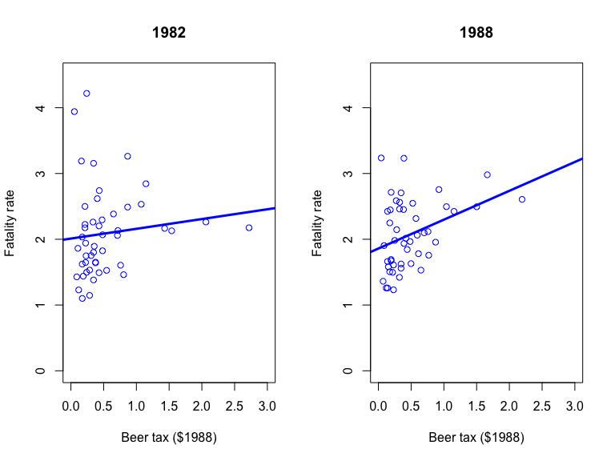
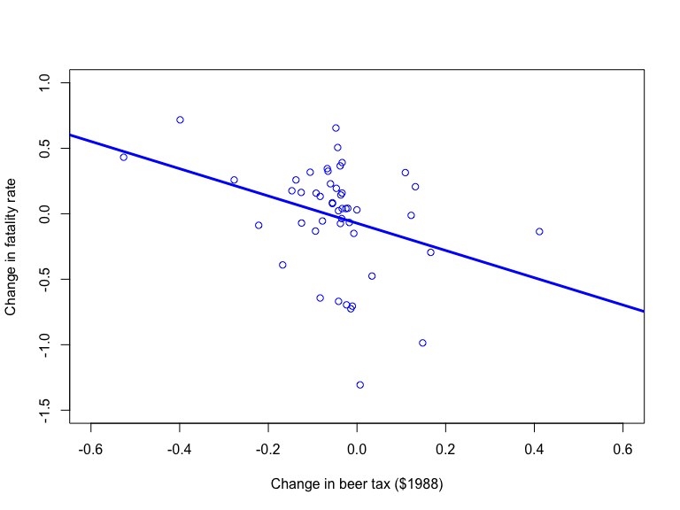
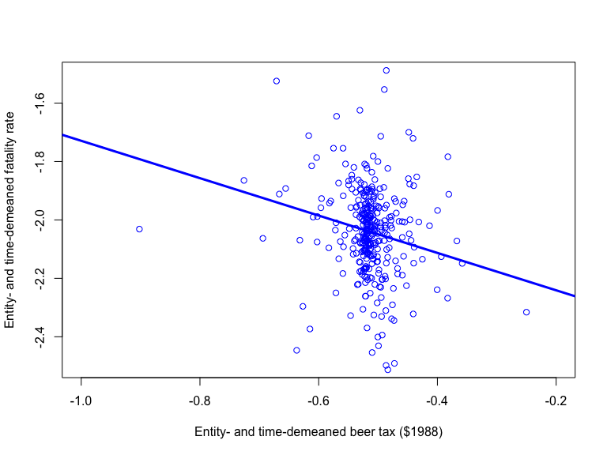

Regression with panel data
Based on Stock and Watson, ch. 10
Jesper Bagger
EC3133 | Royal Holloway | 2020/21
Outline
Panel data
Panel data and omitted variable bias
The fixed effects regression
Regression with entity and time fixed effects
Estimating causal effects in the fixed effects model
Clustered standard errors
Panel data
Panel data
A panel data set contains repeated observations on the same cross section entity
Individual observations on the variables in a panel data set are indexed by two subscripts:
Subscript \(i\) index the cross section entity: \(i=1,\ldots,n\)
Subscript \(t\) index the time period: \(t=1,\ldots,T\)
A panel is balanced if every entity is observed for the same number of periods
The state traffic fatality panel
Cross section entities: the 48 contiguous US states
Time periods: annual, from 1982 to 1988
Traffic fatality rate: number of traffic deaths per 10,000 people living in the state
Beer tax: tax on a case of beer in $1988
Panel data and omitted variable bias
Fatality rate-beer tax scatters

Omitted variable bias
Suppose \(Z_i\) is a time-invariant omitted variable
\[FR_{it} = \beta_0 + \beta_1 BT_{it} + \beta_2 Z_i + u_{it}\]
What might \(Z_i\) capture? Is it likely correlated with \(BT_{it}\)?
Change in the fatality rate between 1982 and 1988 is naturally free of problematic variable \(Z_i\),
\[\begin{multline*} (FR_{i,1988} - FR_{i,1982}) = \\ \beta_1 (BT_{i,88} - BT_{i,82}) + (u_{i,88} - u_{i,82}); \end{multline*}\]
yet, can estimate coefficient of interest \(\beta_1\) by regressing \((FR_{i,88} - FR_{i,82})\) on \((BT_{i,88} - BT_{i,82})\)
Changes in fatality rate-changes in beer tax scatter

The fixed effects regression
The fixed effects regression model
Population regression model
\[FR_{it} = \underset{\beta_0 + \beta_2 Z_i}{\underbrace{\alpha_i}} + \beta_1 BT_{it} + u_{it}\]
\(\alpha_i\) is an entity fixed effect containing all time-invariant determinants of \(FR_{it}\)
The time-invariant determinants may be correlated with timevarying regressor \(BT_{it}\)
The fixed effects regression model has a separate intercepts for each cross section unit (\(n\) intercepts!)
Entity-demeaning
The entity-means of \(FR_{it}\), \(BT_{it}\), and \(u_{it}\) are
\[\overline{FR}_{i} = \frac{1}{T} \sum_{t=1}^T FR_{it}; \quad \overline{BT}_{i} = \frac{1}{T} \sum_{t=1}^T BT_{it};\] \[\overline{u}_{i} = \frac{1}{T} \sum_{t=1}^T u_{it}\]
Entity-demeaning the model gets rid of problematic \(\alpha_i\)
\[(FR_{it} - \overline{FR}_{i})= \beta_1 (BT_{it} - \overline{BT}_{i}) + (u_{it} - \overline{u}_{i})\]
The within-estimator \(\hat{\beta}_{1,\text{Within}}\): estimate \(\beta_1\) by OLS in the demeaned regression of \((FR_{it} - \overline{FR}_{i})\) on \((BT_{it} - \overline{BT}_{i})\)
Demeaned fatality rate-demeaned beer tax scatter

The within-estimator in R using plm()
The within-estimator in R using plm()
## Oneway (individual) effect Within Model
##
## Call:
## plm(formula = fatalrate ~ beertax, data = Fatalities, model = "within",
## index = c("state"))
##
## Balanced Panel: n = 48, T = 7, N = 336
##
## Residuals:
## Min. 1st Qu. Median 3rd Qu. Max.
## -0.5869619 -0.0828376 -0.0012701 0.0795454 0.8977960
##
## Coefficients:
## Estimate Std. Error t-value Pr(>|t|)
## beertax -0.65587 0.18785 -3.4915 0.000556 ***
## ---
## Signif. codes: 0 '***' 0.001 '**' 0.01 '*' 0.05 '.' 0.1 ' ' 1
##
## Total Sum of Squares: 10.785
## Residual Sum of Squares: 10.345
## R-Squared: 0.040745
## Adj. R-Squared: -0.11969
## F-statistic: 12.1904 on 1 and 287 DF, p-value: 0.00055597The within-estimator using dummy variables
Consider the \(n\) dummy variables indicating individual entities
\[D1_i = \left\{ \begin{array}{ll} 1 & \text{if } i = 1 \\ 0 & \text{if } i \neq 1 \end{array} \right., \ldots, Dn_i = \left\{ \begin{array}{ll} 1 & \text{if } i = n \\ 0 & \text{if } i \neq n \end{array} \right. \]
Express the entity fixed effects as coefficients on \(n-1\) dummy variables \(D2_i,\ldots,Dn_i\)
\[FR_{it} = \alpha_1 + \alpha_2 D2_i + \ldots + \alpha_n Dn_i + \beta_1 BT_{it} + u_{it}\]
and estimate the dummy variable model directly by OLS
The within-estimator in R using dummy variables
The within-estimator in R using dummy variables
##
## Call:
## lm(formula = fatalrate ~ beertax + state - 1, data = Fatalities)
##
## Residuals:
## Min 1Q Median 3Q Max
## -0.58696 -0.08284 -0.00127 0.07955 0.89780
##
## Coefficients:
## Estimate Std. Error t value Pr(>|t|)
## beertax -0.65587 0.18785 -3.491 0.000556 ***
## stateal 3.47763 0.31336 11.098 < 2e-16 ***
## stateaz 2.90990 0.09254 31.445 < 2e-16 ***
## statear 2.82268 0.13213 21.364 < 2e-16 ***
## stateca 1.96816 0.07401 26.594 < 2e-16 ***
## stateco 1.99335 0.08037 24.802 < 2e-16 ***
## statect 1.61537 0.08391 19.251 < 2e-16 ***
## statede 2.17003 0.07746 28.016 < 2e-16 ***
## statefl 3.20950 0.22151 14.489 < 2e-16 ***
## statega 4.00223 0.46403 8.625 4.43e-16 ***
## stateid 2.80861 0.09877 28.437 < 2e-16 ***
## stateil 1.51601 0.07848 19.318 < 2e-16 ***
## statein 2.01609 0.08867 22.736 < 2e-16 ***
## stateia 1.93370 0.10222 18.918 < 2e-16 ***
## stateks 2.25441 0.10863 20.753 < 2e-16 ***
## stateky 2.26011 0.08046 28.089 < 2e-16 ***
## statela 2.63051 0.16266 16.171 < 2e-16 ***
## stateme 2.36968 0.16006 14.805 < 2e-16 ***
## statemd 1.77119 0.08246 21.480 < 2e-16 ***
## statema 1.36788 0.08648 15.818 < 2e-16 ***
## statemi 1.99310 0.11663 17.089 < 2e-16 ***
## statemn 1.58042 0.09363 16.880 < 2e-16 ***
## statems 3.44855 0.20936 16.472 < 2e-16 ***
## statemo 2.18137 0.09252 23.576 < 2e-16 ***
## statemt 3.11724 0.09441 33.017 < 2e-16 ***
## statene 1.95545 0.10551 18.534 < 2e-16 ***
## statenv 2.87686 0.08106 35.492 < 2e-16 ***
## statenh 2.22318 0.14114 15.751 < 2e-16 ***
## statenj 1.37188 0.07333 18.709 < 2e-16 ***
## statenm 3.90401 0.10154 38.449 < 2e-16 ***
## stateny 1.29096 0.07563 17.070 < 2e-16 ***
## statenc 3.18717 0.25173 12.661 < 2e-16 ***
## statend 1.85419 0.10193 18.191 < 2e-16 ***
## stateoh 1.80321 0.10193 17.691 < 2e-16 ***
## stateok 2.93257 0.18428 15.913 < 2e-16 ***
## stateor 2.30963 0.08117 28.453 < 2e-16 ***
## statepa 1.71016 0.08648 19.776 < 2e-16 ***
## stateri 1.21258 0.07753 15.640 < 2e-16 ***
## statesc 4.03480 0.35479 11.372 < 2e-16 ***
## statesd 2.47391 0.14121 17.519 < 2e-16 ***
## statetn 2.60197 0.09162 28.398 < 2e-16 ***
## statetx 2.56016 0.10853 23.589 < 2e-16 ***
## stateut 2.31368 0.15453 14.972 < 2e-16 ***
## statevt 2.51159 0.13973 17.975 < 2e-16 ***
## stateva 2.18745 0.14664 14.917 < 2e-16 ***
## statewa 1.81811 0.08233 22.084 < 2e-16 ***
## statewv 2.58088 0.10767 23.971 < 2e-16 ***
## statewi 1.71836 0.07746 22.185 < 2e-16 ***
## statewy 3.24913 0.07233 44.922 < 2e-16 ***
## ---
## Signif. codes: 0 '***' 0.001 '**' 0.01 '*' 0.05 '.' 0.1 ' ' 1
##
## Residual standard error: 0.1899 on 287 degrees of freedom
## Multiple R-squared: 0.9931, Adjusted R-squared: 0.992
## F-statistic: 847.8 on 49 and 287 DF, p-value: < 2.2e-16Regression with entity and time fixed effects
Regression with entity and time fixed effects
Population regression model
\[FR_{it} = \beta_0 + \beta_1 BT_{it} + \beta_2 Z_i + \beta_3 S_t + u_{it}\]
The model can be represented by an state and time fixed effects regression model:
\[FR_{it} = \beta_1 BT_{it} + \alpha_i + \lambda_t + u_{it}\]
where \(\alpha_i\) is an state fixed effect, \(\lambda_t\) is a time fixed effect.
The entity and time fixed effects regression model eliminates omitted variables arising both from
time-invariant unobserved variables
state-invariant unobserved variables
Entity- and time-demeaning
The time-means of \(FR_{it}\), \(BT_{it}\), and \(u_{it}\) are
\[\overline{FR}_{t} = \frac{1}{n} \sum_{i=1}^n FR_{it}; \quad \overline{BT}_{t} = \frac{1}{n} \sum_{i=1}^n BT_{it};\] \[\overline{u}_{t} = \frac{1}{n} \sum_{i=1}^n u_{it}\]
Entity- and time-demeaning the model gets rid of problematic entity- and time-fixed effects, \(\alpha_i\) and \(\lambda_t\)
\[\begin{multline*} (FR_{it} - \overline{FR}_{i} - \overline{FR}_{t}) = - (\overline{\alpha} + \overline{\lambda}) \\ \beta_1 (BT_{it} - \overline{BT}_{i} - \overline{BT}_{t}) + (u_{it} - \overline{u}_{i} - \overline{u}_{t}) \end{multline*}\]
Demeaned fatality rate-demeaned beer tax scatter

The twoway within-estimator in R using plm()
The twoway within-estimator in R using plm()
## Twoways effects Within Model
##
## Call:
## plm(formula = fatalrate ~ beertax, data = Fatalities, effect = "twoways",
## model = "within", index = c("state", "year"))
##
## Balanced Panel: n = 48, T = 7, N = 336
##
## Residuals:
## Min. 1st Qu. Median 3rd Qu. Max.
## -0.5955623 -0.0809619 0.0014301 0.0823356 0.8388350
##
## Coefficients:
## Estimate Std. Error t-value Pr(>|t|)
## beertax -0.63998 0.19738 -3.2424 0.001328 **
## ---
## Signif. codes: 0 '***' 0.001 '**' 0.01 '*' 0.05 '.' 0.1 ' ' 1
##
## Total Sum of Squares: 10.29
## Residual Sum of Squares: 9.9193
## R-Squared: 0.036065
## Adj. R-Squared: -0.14918
## F-statistic: 10.5133 on 1 and 281 DF, p-value: 0.001328The twoway within-estimator in R using dummy variables
Estimating causal effects in the fixed effects model
The fixed effects regression assumptions
\[FR_{it} = \alpha_i + \beta_1 BT_{it} + u_{it}; \quad i=1,\ldots,n; \, t = 1,\ldots,T\]
where \(\beta_1\) is the causal effect of \(BT_{it}\) on \(FT_{it}\). \(\hat{\beta}_{1,\text{Within}}\) is consistent for \(\beta_1\) and asymptotically normal if
\(\mathrm{E}(u_{it}|BT_{i1},\ldots,BT_{iT},\alpha_i) = 0\)
\((BT_{i1},\ldots,BT_{iT},u_{i1},\ldots,u_{iT};i=1,\ldots,n)\) are i.i.d. draws from their joint distribution
\((BT_{it},u_{it})\) have nonzero finite 4th moments
There is no perfect multicollinearity
Clustered standard errors
The sampling distribution of the within-estimator
When \(n\) is large, \(\hat{\beta}_{1,\text{Within}}\) is well approximated by a random variable with a normal distribution
\[\hat{\beta}_{1,\text{Within}} \overset{\text{approx.}}{\sim} \mathcal{N}\left( \beta_1, \mathrm{var}(\hat{\beta}_{1,\text{Within}}) \right)\]
where \[\mathrm{var}(\hat{\beta}_{1,\text{Within}}) = \frac{1}{nT}\frac{\frac{1}{T}\mathrm{var}\left( \sum_{t=1}^T \widetilde{X}_{it} \widetilde{u}_{it}\right)}{\mathrm{E}\left(\frac{1}{T}\sum_{t=1}^T \widetilde{X}_{it}^2\right)^2}\]
Looks like the variance in a heteroskedastic regression model, but also allows for serial correlation in the errors \(u_{it}\) within each state \(i\).
Clustered standard errors (HAR)
\(\mathrm{var}(\hat{\beta}_{1,\text{Within}})\) contains unknown population quantities, which are replaced by sample counterparts:
\[SE(\hat{\beta}_{1,\text{Within}})) = \sqrt{\frac{1}{nT}\frac{\frac{1}{n-1}\sum_{i=1}^n \frac{1}{T}\left[\sum_{t=1}^T \widetilde{BT}_{it} \hat{u}_{it}\right]^2}{\left[ \frac{1}{nT} \sum_{i=1}^n \sum_{t=1}^T \widetilde{BT}_{it}^2 \right]^2}}\]
where \(\hat{u}_{it}\) is the residual from the fixed effects regression.
This is the clustered standard errors of \(\hat{\beta}_{1,\text{Within}}\), and \(SE(\hat{\beta}_{1,\text{Within}})) \overset{p}{\rightarrow} SD(\hat{\beta}_{1,\text{Within}})\) as \(n \rightarrow \infty\), even when \(u_{it}\) is heteroskedastic and serially correlated.
Clustered standard errors in R
The within-estimator in R using plm()
## Parameter | Coefficient | SE | 95% CI | t | df | p
## ------------------------------------------------------------------------
## beertax | -0.640 | 0.350 | [-1.329, 0.049] | -1.828 | 281 | 0.069Summary
A panel data set contains repeated observations on the same cross section entity
The fixed effects regression model has a separate intercepts for each cross section unit (\(n\) intercepts!)
The within-estimator of the slopes on the time-varying variables uses only within-entity information: as-if controlling for all time-invariant omitted variables
The within-estimator consistently estimates causal effects if errors are uncorrelated with past, present, and future values of the time-varying regressors
Always use clustered standard errors